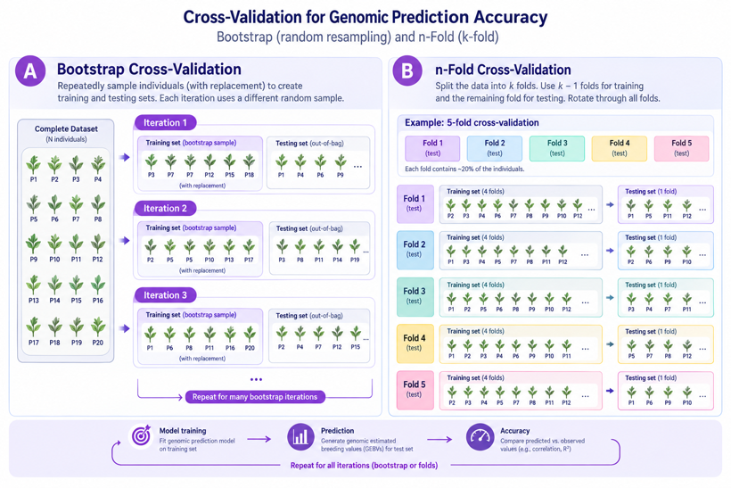

Marker Effects¶
create_marker_effects_file()¶
This function was created to create the marker effects file using the geno input file and a new input called BLUE. It fits an rrBLUP model (via the rrBLUP R package) and returns the marker effects in the format required by the rest of the workflow.
marker_effects <- create_marker_effects_file(
geno = geno,
BLUE = BLUE,
h2_method = "VanRaden",
ploidy = 2L,
mean_impute = TRUE
)
| Parameter | Default | Description |
|---|---|---|
geno |
Dosage genotype matrix. See Getting Started | |
BLUE |
Data frame of individuals and their BLUE/de-regressed BLUP/adjusted phenotype (see below) | |
h2_method |
"VanRaden" |
Method used to scale the marker variance to approximate additive genetic variance ("VanRaden" or "marker_num") |
ploidy |
2L |
Integer ploidy level |
mean_impute |
TRUE |
Replace missing genotypes with the marker mean before fitting |
BLUE is a dataframe containing two columns:
Individual, which gives the individual's identifier found in the genotype file,geno. Each individual MUST only appear once!BLUE, which contains a singular, numeric value. This value can be a Best Linear Unbiased Estimate (BLUE), de-regressed Best Linear Unbiased Prediction (BLUP) extracted from a random effect with an identity covariance structure (i.e., broad-sense heritability/repeatability effect with no additive genetic effect fit), or an adjusted phenotype.
Every individual in BLUE must be present in geno. Individuals in geno but not in BLUE are not used to fit the model. NA values in the BLUE column are allowed - those individuals are left out of the model fit and the prediction accuracy.
The function prints the estimated variance components and the prediction accuracy (the correlation between the GEBV and BLUE):
Marker Variance: 3.6773e-05
Additive Genetic Variance: 6.2044e-02
Residual Variance: 1.6562e-01
h2: 0.27
Prediction Accuracy (cor(GEBV, BLUE or deregressed BLUP or adj pheno)) is: 0.78
Warning
The prediction accuracy printed by create_marker_effects_file() is calculated on the same individuals the model was trained on, so it will be optimistic. Use n_fold_cross_validation() or cross_validation() (below) to estimate how well the model predicts individuals it has not seen. However, prediction accuracy will be necessarily low with small datasets and using an n-fold subsampling or the bootstrap method with low training proportion.
Marker Effect Parameters¶
h2_method¶
Controls scaling of marker variance to approximate the additive genetic variance and thus narrow-sense heritability.
Warning
This is not a true additive genetic variance estimate. For a true value, it is better to use GBLUP with a REML variant to estimate the genetic variance.
Options:¶
"VanRaden"(recommended)"marker_num"(only generally used if the genotype matrix was scaled; not applicable 99% of the time)
The "VanRaden" method is most commonly utilised in animal and plant breeding. It follows method 1 of Van Raden, 2008. The marker variance is multiplied by \(2*\sum{p_{i}(1-p_{i})}\) such that each marker is scaled equivalently and is assumed to contribute equivalent variance (infinitesimal model like GBLUP or BayesC). For other ploidy levels, the 2 is replaced with the ploidy.
"marker_num" should only be utilised when the genotypes have been pre-scaled to unit variance (i.e., not dosage values).
We plan to offer Yang's method in the future.
ploidy¶
Integer ploidy level.
Must be provided as an integer. Example:
NOT:
mean_impute¶
TRUEmissing genotypes (NA) are replaced with the mean dosage of that marker before fitting the model and calculating prediction accuracy.FALSEgenotypes are used as provided. The model cannot be fit with missing genotypes, so this will fail with an error ifgenocontains anyNAvalues.
Tip
Mean imputation is a simple approach that is reasonable for a small proportion of missing genotypes. For a large proportion, impute the genotypes first (e.g., with beagle_impute_geno(), see Data Import, Imputation, and Phasing).
Resulting File Structure¶
Columns:
| SNP | Effect |
|---|---|
| character value, marker names (must match geno and map) | numeric allele substitution/marker effect value |
This is the structure that must be provided if marker effects are provided externally.
Tip
We currently do not allow multiple marker effect columns at this time, but plan to add this functionality in the future as well as multi-trait capability.
solve_marker_effects() and compute_prediction_accuracy()¶
create_marker_effects_file() is a wrapper around these two functions. They are exported for users who need the full model output, such as the variance components or intercept, rather than only the marker effects.
#fit the model - every argument must be given, there are no defaults
model <- solve_marker_effects(
geno = geno,
BLUE = BLUE,
h2_method = "VanRaden",
ploidy = 2L,
mean_impute = TRUE
)
model$u #marker effects
model$Vu #marker variance
model$Ve #residual variance
#correlation between the predicted GEBV and BLUE
accuracy <- compute_prediction_accuracy(
geno = geno,
marker_effects = model, #the model from solve_marker_effects(), not the marker effects data frame!
BLUE = BLUE,
mean_impute = TRUE
)
solve_marker_effects() returns the output of rrBLUP::mixed.solve(): a list with the marker effects (u), marker variance (Vu), residual variance (Ve), fixed effect (beta), and log-likelihood (LL). See the rrBLUP documentation for details.
compute_prediction_accuracy() returns the correlation as a 1 × 1 matrix. Use BLUE for a set of individuals not used to fit the model to estimate prediction accuracy on new individuals.
Prediction Accuracy with Bootstrapping and Cross-Validation Methods¶

n_fold_cross_validation()¶
This function performs the marker effects calculation, but is utilised to evaluate model performance.
CV <- n_fold_cross_validation(
geno = geno,
BLUE = BLUE,
nfold = 5L,
h2_method = "VanRaden",
ploidy = 2L,
mean_impute = TRUE
)
The data is split into nfold groups, where each group is utilised once for validation while training occurs on the other groups. That is, nfold - 1 groups are utilised for training and the remaining 1 group is utilised for validation. This is repeated until each group is utilised once for validation.
nfold MUST be an integer (i.e., 5L and not 5). The default is 5L.
The function prints the variance components for each fold and the mean prediction accuracy across folds, and returns the prediction accuracy of each fold.
cross_validation()¶
CV <- cross_validation(
geno = geno,
BLUE = BLUE,
train_prop = 0.9,
fold = 30L,
h2_method = "VanRaden",
ploidy = 2L,
mean_impute = TRUE
)
A more generalised version of n_fold_cross_validation(). This function splits the data into train_prop and 1 - train_prop proportions randomly each iteration. Across iteration, the sampling is conducted indepenently with replacement (i.e., bootstrapping). That is, similar groups could be utilised for training and validation in different iterations. Thus, more folds are likely needed compared to n_fold_cross_validation() to adequately assess uncertainty, but may be a better option for small datasets.
For small datasets, it is recommended that train_pop be closer to 1 or to make nfold a large integer, such that very few individuals are left out for training. This will, of course, necessitate more folds to assess accuracy.
train_prop must be a value between 0 and 1 (i.e., the proportion). The default is 0.9. This is taken as train_prop * number of rows rounded up. The rest of the data is utilised for validation.
fold is an integer value (e.g., 30L and not 30) that is utilised to repeat the random sampling with replacement fold times for fold validations. The default is 30L.
Important Information¶
Warning
You should not try to utilise the validation functions on a small population size as it is highly inadvisable to train marker effects on small population sizes. What is considered "small" is relative to the number of markers, heritability, effective population size, and population structure. For crops, less than 200 individuals would be inadvisable. For livestock, this number is likely much greater. Both functions produce a warning when BLUE has 200 or fewer individuals.
Tip
Both cross-validation functions split the data randomly, so results will differ slightly between runs. Use set.seed() before calling them to make the results reproducible.